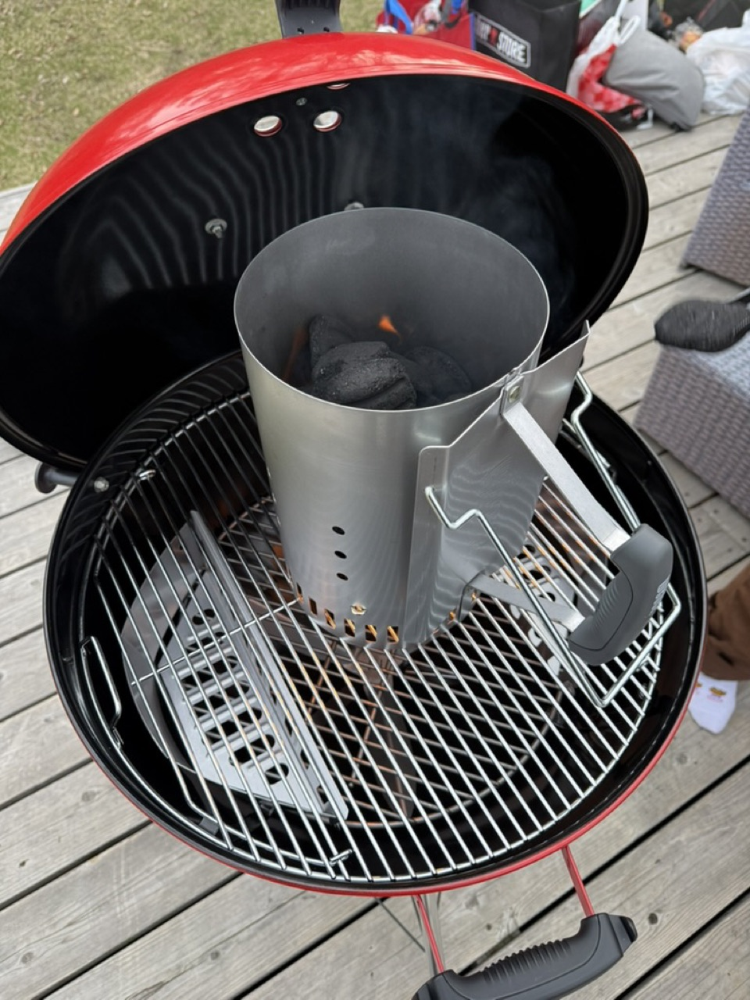

BBQグリル徹底比較 — ガス・炭・電気・ペレットの違いと選び方【2026年版】
BBQグリルには大きく4種類 ―― ガス・炭・電気・ペレット。同じ「肉を焼く道具」でも燃料と構造が違えば、出せる料理も向いている使い方もぜんぜん違う。本記事は4種のメリット・デメリット・価格帯を表で整理し、世界のBBQブランドを牽引する Weber Kettle / Pulse / Q シリーズ の位置付けまで踏み込む、2026年版の完全比較ガイドです。

BBQグリルは4種類ある
「BBQグリル」と一口に言っても、燃料と構造で4タイプに分かれます。
| タイプ | 燃料 / 得意な料理 / キーワード |
|---|---|
| 炭 | 木炭 / 焼肉・ロー&スロー・スモーク / 香り・汎用性 |
| ガス | プロパン / ステーキ・リバースシア / 速さ・安定 |
| ペレット | 木製ペレット / ブリスケット・プルドポーク / 自動・スモーク |
| 電気 | 電気のみ / ステーキ・ベランダ調理 / 屋内可・無煙 |
「正解」はなく、住環境・予算・やりたい料理・調理時間 の4つで最適解が変わります。順に深掘りします。
炭グリル — 王道、香り、汎用性
BBQの最も古典的な形。木炭の輻射熱と煙で肉を焼く、世界中で最も使われているタイプです。
メリット
- 香りが最強：炭の輻射熱と微量の煙で独特の「BBQの香り」
- 温度幅が広い：100℃スモーク〜400℃シアまで1台で
- 本体価格が安い（Kettle 57cmで4〜5万円）
- ロー&スローに最適／所有感がある
デメリット
- 火起こしに15〜30分／温度安定に習熟が必要
- 後片付けが面倒（灰処理）／屋内不可
調理開始15〜30分／温度範囲100〜500℃／スモーク香◎／価格帯¥10,000〜¥60,000。香りと儀式性を重視する週末本格派向け。
ガスグリル — 速さ、安定、再現性
ガス火で焼くBBQグリル。アメリカ郊外の庭で最も普及。スイッチ1つで点火、ノブで火力調整、コンロの延長線上です。
メリット
- 5分で調理開始／温度が安定・再現性高い
- 後片付けが楽：灰なし／大型化しやすい（3〜4バーナー）
デメリット
- スモーク香弱い（スモークボックスで補完）
- 価格高め（Genesis 15〜25万円、Spirit 8〜15万円）
- ガス代ランニング／固定設置型
調理開始5〜10分／温度範囲150〜350℃／スモーク香△／価格帯¥60,000〜¥250,000。頻度高く焼きたい・庭広い人向け。
ペレットグリル — 自動化されたスモーカー
木製ペレットを電動オーガで自動供給し、温度をデジタル制御するグリル。本質は「自動スモーカー」で、ロー&スロー専用設計。メリット：温度デジタル設定で110℃を12時間維持／スモーク香◎／放置可／アプリ連携／未熟でもブリスケットが焼ける。デメリット：高温が苦手（上限250℃）／電源必須／15〜30万円／故障リスク。調理開始15分／温度範囲80〜260℃／価格帯¥150,000〜¥350,000。ブリスケット主体で自動化したい人向け。
電気グリル — 屋内・ベランダ・温度精度
電熱線で発熱するBBQグリル。マンションのベランダや火が使えない環境向け。Weber Pulse が代表機種。メリット：屋内・ベランダで使える（換気必須）／無煙・無臭／温度精度±1℃／立ち上がり5分／後片付けが最も楽。デメリット：スモーク香なし／高温に弱い（上限250℃）／大型化しにくい／Pulse 10〜18万円。調理開始5分／温度範囲100〜260℃／価格帯¥40,000〜¥180,000。マンション・近隣配慮重視向け。
Weber Kettle / Pulse / Q シリーズの位置付け
世界シェア1位の Weber は4タイプすべてのラインナップを持ちます。代表機種を整理。
| 機種 | タイプ / 価格 | 強み |
|---|---|---|
| Original Kettle 47/57cm | 炭 / ¥30,000〜¥60,000 | 世界一売れた炭グリル・万能 |
| Smokey Joe 37cm | 炭小型 / ¥15,000〜¥25,000 | 持ち運べる・ベランダ可 |
| Q 1000/2000/3000 | ガス小〜中 / ¥45,000〜¥130,000 | ベランダ〜家庭用万能 |
| Spirit / Genesis | ガス中〜大 / ¥100,000〜¥350,000 | 庭向き・本格・大型 |
| Pulse 1000/2000 | 電気 / ¥100,000〜¥180,000 | 屋内・ベランダ可 |
| Smokefire EX4/EX6 | ペレット / ¥180,000〜¥300,000 | 200℃以上も出せる希少機 |
Kettle vs Pulse vs Q — 一番迷う3機種の比較
| 項目 | Kettle 57cm | Pulse 2000 | Q 2200 |
|---|---|---|---|
| タイプ / 価格 | 炭 / ¥45,000 | 電気 / ¥150,000 | ガス / ¥65,000 |
| スモーク香 / 立ち上がり | ◎ / 30分 | × / 5分 | △ / 5分 |
| 温度精度 / 屋内可 | △ / × | ◎±1℃ / ◎ | ○ / △ |
| ロー&スロー / 後片付け | ◎ / 灰処理 | ○ / 最も楽 | ○ / 楽 |
| 向いている人 | 香り・週末本格派 | マンション・利便性 | 頻度・庭あり |
迷ったらKettle
「BBQの世界に初めて入る1台」なら答えは Weber Original Kettle 57cm。プロBBQビルダーが「1台に絞ればKettle」と答える定番。焼肉スタイルからアメリカンBBQまで1台でこなせる、最も汎用性の高い炭グリルで、中古でもリセールが効きます。
価格帯別・住環境別の選び方
| 予算 | おすすめ / 狙い |
|---|---|
| 〜2万円 | Smokey Joe / 入門機・ベランダ可 |
| 3〜6万円 | Kettle 57cm / 1台で何でも・一生もの |
| 5〜10万円 | Q 2200・Spirit Mini / 速さと安定 |
| 10〜18万円 | Pulse 2000・Q 3000 / マンション or 本格ガス |
| 15〜30万円 | Smokefire・Traeger / ペレット自動化 |
| 20〜40万円 | Genesis 4バーナー / 大人数・大型庭 |
| 住環境 | 推奨タイプ / 具体例 |
|---|---|
| 戸建て・庭あり | 炭 or ガス / Kettle・Spirit・Genesis |
| マンション・ベランダ可 | 電気 / Pulse 1000・2000 |
| キャンプ場メイン | 小型炭・ガス / Smokey Joe・Q 1200 |
| ロー&スロー特化 | ペレット or 大型炭 / Smokefire・Kettle |
→ 自宅BBQの完全ガイド ／ BBQ用語12選
総合比較表とおすすめの選び方
4タイプを1枚の表に集約します。
| 軸 | 炭 | ガス | ペレット | 電気 |
|---|---|---|---|---|
| 立ち上がり | 15〜30分 | 5〜10分 | 15分 | 5分 |
| 温度上限 | 500℃ | 350℃ | 260℃ | 260℃ |
| スモーク香 / 温度精度 | ◎ / △ | △ / ○ | ◎ / ◎ | × / ◎ |
| 放置耐性 / 儀式性 | × / ◎ | ○ / ○ | ◎ / △ | ◎ / × |
| エントリー価格 | ¥10,000〜 | ¥60,000〜 | ¥150,000〜 | ¥40,000〜 |
| 屋内 / 後片付け | × / △ | △ / ○ | × / △ | ◎ / ◎ |
あなたに向いているタイプ — 3分診断
- 「香りと儀式性を最重視」 → 炭（Kettle）
- 「速くて安定、頻度高く」 → ガス（Q / Spirit）
- 「ブリスケットを自動で」 → ペレット（Smokefire）
- 「マンション・近隣配慮」 → 電気（Pulse）
- 「1台で全部・迷っている」 → 炭（Kettle 57cm 一択）
FAQ
BBQグリル選びについてよくある質問
ガス・炭・電気・ペレットのどれがおすすめですか？
用途次第。週末短時間ならガス、本格ロー&スローなら炭/ペレット、マンションなら電気。最も汎用性が高いのは Weber Kettle、最も自動化したいなら Smokefire です。
Weber Kettle と Pulse の違いは？
Kettle は炭、Pulse は電気。Kettle は屋外で炭の煙と香りを楽しめるが火起こしが必要。Pulse は屋内（換気必須）でも使え、温度を数字で設定できます。
ガスグリルでロー&スローはできますか？
できます。バーナーを片側だけ点火し肉を消火側に置く「インダイレクト調理」が前提。蓋を閉めて110〜120℃をキープし、スモーク香はスモークボックスで補います。
ペレットグリルとガスグリルの違いは？
ペレットは木製ペレットを燃料に自動で温度を保つ「自動スモーカー」、ガスはプロパンで高温短時間調理向き。ペレットはロー&スロー特化、ガスは強い焼き目に強い、と棲み分けます。
予算別のおすすめは？
〜2万円 Smokey Joe、3〜6万円 Kettle 57cm、7〜15万円 Q や Genesis、15〜30万円ペレット。迷ったら Kettle 57cm が正解の確率が高い。
FIRST RUB
グリルを買ったら、次に揃える1本
どのグリルを選んでも、最後に味を決めるのはラブ。最初の1本に。